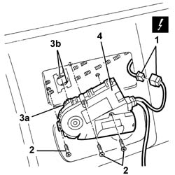
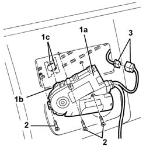

7030B70 sun-roof control switch - r+r
- Path
- Procedures > 70 FITTINGS > 7030 SUN ROOF AND HOOD > 7030B sliding roof > 7030B70 sun-roof control switch - r+r
- Kind
- repair procedure (removal / refitting; the operation number is the code)
- Applies to
- all engines; all production periods
- Interactive page
- https://sloeber94.github.io/elrnDB-a147/en/#/3025779
Applies to: all engines; all production periods
 Removing
Removing
 Refitting
Refitting5580E22 Anti-theft device VOLUMETRIC SENSORS - R.R. after checking electrical circuit
1. Disconnect the electrical connection between the motor and control unit.
 | Name | Connector |
|---|---|---|
1 | Sunroof connection |
2. Undo the bolts securing the motor to the control unit.
3. Release the motor's toothed wheel (3a) from the slide cables (3b), making sure not to allow the cables to slide. (If the cables slide but not simultaneously, this could cause the slides to go out of alignment, resulting in a malfunction of the sun roof).
4. Remove the motor with control unit.

Applies to: all engines; all production periods
Refitting
RemovingCheck that the motor with control unit is not damaged.
1. Position the motor with control unit (1a) and engage the motor's toothed wheel (1b) on the slide cables (1c), making sure not to allow the cables to slide. (If the cables slide but not simultaneously, this could cause the slides to go out of alignment, resulting in a malfunction of the sun roof).
2. Secure the motor with control unit with the bolts.
3. Connect the electrical connection

Applies to: all engines; all production periods
5580E22 Anti-theft device VOLUMETRIC SENSORS - R.R. after checking electrical circuit
Check the operation of the sunroof.
If necessary, reprogramme the control unit: 7030B sliding roof .
Topics linked from this page (3)
- 5580E22 Anti-theft device VOLUMETRIC SENSORS - R.R. after checking electrical circuit
- 7030B sliding roof
- D45 Sunroof connection